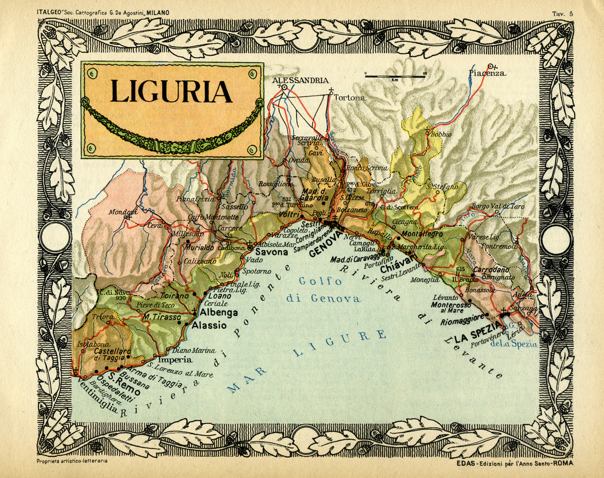

Attractions are what make Portofino the village that it is today, many come for the landscape and the bustling air but there are some truly beautiful monuments within the area of the village. One of the most famous of these being, the Christ of the Abyss which is a fascinating sculpture that has sunk to the bottom of the sea to a depth of 17 meters but is still visible to the naked eye. Another renowned sight is the Oratory of Santa Maria which boasts stunning gothic architecture.

×